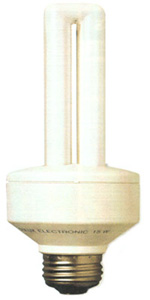

From halogen to halide: a guide to lighting your home for less money.
Compact fluores cents use 75% less electricity than incandescent bulbs.
Lighting accounts for approximately 10 percent of the total energy use in the average American home and can easily cost $100-$150 per year in electricity. While that's not a huge amount, it's more than enough to justify thinking about conservation, especially when the advantages of energy-efficient alternatives are considered. A bit of planning and investigation can put about half of that money back in your pocket, as well as saving precious energy resources.
Incandescent
Nearly all lighting in the home today is incandescent. In this type of light, electric current heats up a metal filament in the light bulb, making it glow white-hot and give off light. The problem is that only 10 percent of that electricity is actually used to produce light-the rest ends up as heat. During the winter months, incandescent lighting is an expensive form of electric heat; during the summer months, it makes your air conditioner work harder. Despite their inefficiency, incandescent bulbs are still a favorite among consumers because of their soft, evenly diffused light. There are more economical alternatives however, and they need not be hard on the eyes.
Tube Fluorescent Lighting
More light is produced by tube fluorescent lighting than by any other light source. Worldwide, electricity consumption for fluorescent lighting yearly is estimated at 270 billion kilowatts-the output of more than 30 large power plants! When you think of standard tube fluorescent lighting, what probably comes to mind is the buzzing, flickering bluish-white lights in supermarkets or offices that make colors look washed-out and give some employees headaches. That is hardly the kind of light you want in your house. Well, times have changed. Tube fluorescent lighting has improved dramatically over the past ten years. Lights are available that match incandescent lights in quality, accuracy in illuminating colors, and providing a pleasant, warm atmosphere. Just as importantly, electronic ballasts that totally eliminate any hum or flicker are now available for tube fluorescent lighting. These newer tube fluorescent lights make a great deal of sense for indirect lighting around a room perimeter or above a bathroom mirror.
All fluorescent lights need ballasts to operate. The ballast alters the electric current flowing through the tube, which activates the gas inside, causing the tube to emit light. For this reason, fluorescent lamps are more complex and larger than standard incandescent light bulbs.
When selecting tube fluorescent lights, don't be satisfied with standard cool-white or warm-white tubes. Look for products with high color rendition index (CRI). This is a measure of the ability of the light to illuminate colors accurately. Also look for high efficiency. Lighting efficiency is measured in lumens (light output) per watt (electricity use). Some new fluorescent lamps use special coatings to achieve both high CRI ratings and high efficiency. Some of the most efficient fluorescent tube lamps are narrower in diameter and may require different fixtures and ballasts than standard fluores cents.
For use in living areas, ask for electronic ballasts for tube fluorescent fixtures. While they are more expensive than standard magnetic ballasts, they are quieter, turn on without flickering, and save as much as 35 percent on energy use as well.
When shopping for tube fluorescent lighting fixtures and lamps, it helps to know what you want. Even at retail lighting stores, salespeople may not be familiar with some of the products on the market. If you can't find what you want, go to a commercial lighting supplier.
Compact Fluorescent Lights
The introduction of compact fluorescent lights in the early 1980s revolutionized energy-efficient lighting. Compact fluorescent lights use one-quarter to one-third as much electricity as incandescent lights, and last up to ten times longer. They work in the same way as standard tube-fluorescent lights, only the tube is smaller and folded over to concentrate the light. The compact design allows them to be used in place of incandescent light bulbs. The environmental benefits of these lights are dramatic. A single 1-watt compact fluorescent light, for example, used in place of a 75-watt incandescent bulb, will save about 570 kWh over its lifetime. If your electricity is produced from a coal fired power plant, that savings represents over 500 pounds of coal that would release 1,300 pounds of carbon dioxide and 20 pounds of sulfur dioxide.
Integral vs. Modular Compact
Fluorescent Lights
Integral compact fluorescent lights have the ballast and tube built into a single unit. They can have either magnetic or electronic ballasts.
Modular compact fluorescent lights have separate ballasts and tubes. Currently, these all use magnetic ballasts. Modular ballasts, or adapters as they are sometimes called, usually screw into standard light bulb sockets. You can also buy light fixtures that are hard-wired for compact fluorescent lights-the ballast is built into the fixture. The advantage to modular compact fluorescent lights is that you don't have to replace the ballast when the fluorescent tube burns out. While compact fluorescent tubes and integral compact fluorescent lights generally last about 10,000 hours, ballasts may last 50,000 hours or longer. Replacement lamps cost just a few dollars apiece.
Until recently, high-quality attractive fixtures designed for compact fluorescent lighting were hard to find. That is quickly changing though. Major fixture manufacturers are adapting their products for compact fluorescent lighting. When using standard light fixtures, you'll have to use integral compact fluorescent lights or modular units with adapters to fit in standard light bulb sockets. Sometimes compact fluorescent lights are too tall or the bases too wide to fit into these fixtures.
There are many different shapes and sizes of compact fluorescent lights on the market, so finding the best product may take some looking. For standing lamps and table lamps with wire harps to support the lamp shades, you might need to buy larger harps to fit the taller compact fluorescent lights. Or, with some adapters, you can fit the harps into built-in slots on the adapters, raising the shade. Again, it may take a little trial and error to find what you need. Be aware that compact fluorescent lights (with ballasts) are substantially heavier than standard light bulbs. This added weight could make some floor or table lamps unstable and liable to tip over. For recessed down lights, spotlights, and track lights, the problem may be that the compact fluorescent lights are too wide at the base to fit into the can or cone. Some compact fluorescent lights are tapered at the base to solve this problem. Never use compact fluorescent lights in circuits that have dimmers. Currently available products cannot be dimmed. Doing so could lead to a fire hazard. Compact fluores cents can be used in three-way fixtures however.
Compact fluorescent lights save a lot of money compared to incandescent lights, but they also cost a lot more to buy initially. To figure out how much money they save, you have to look at both the purchase and operating cost. It may surprise you to learn that the light bulbs you currently use cost a lot more to operate than they cost to buy. When you spend 50 cents for a 75-watt light bulb, you're committing yourself to spending more than $5 for electricity (at 8 cents/kWh) over that bulb's expected 750-hour life. With a compact fluorescent light, you spend $15-$20 to buy it (less if your utility company offers a rebate), but you save money in the long run, because it uses a lot less electricity and lasts a lot longer. Most compact fluorescent lights last about 10,000 hours. The longer you keep a particular light on each day, the faster a compact fluorescent replacement will pay for itself. If the light is on just two hours a day, it will pay for itself after the fifth year. If it's on eight hours a day, though, you'll come out ahead during the second year.
With modular compact fluorescent lights, the savings will be even greater, because as lamps fail, only the lamp itself and not the ballast has to be replaced.
HID Lighting
High-intensity discharge or HID lighting is what you typically see along streets and in parking lots. HID lighting has advanced almost as quickly as fluorescent lighting in recent years. There are three types commonly used: mercury vapor, high-pressure sodium, and metal halide. Like fluorescent lights, they require ballasts to operate, and most HID lights take several minutes to warm up.
Mercury vapor lights are still the most common for outdoor lighting around homes, but they are quickly becoming obsolete because of the higher efficiency and improved color quality of high-pressure sodium and metal halide lights. High-pressure sodium lamps are available with efficiencies as high as 140 lumens per watt, though the light is a bit yellowish. Metal halide lights produce a whiter light, closer to incandescent in quality, but the efficiency is lower than that of high-pressure sodium.
The primary place you will use HID lighting at home is out doors: to light up the driveway, tennis court, etc. But a few manufacturers have introduced products designed for indoor lighting
Halogen Lighting
Halogen or tungsten-halogen lighting has improved somewhat over the past few years and remains the lighting of choice where extremely high light quality or precise light focusing is required. It's really a type of incandescent lighting, but it's somewhat more efficient-though still considerably less efficient than fluorescent lighting. In situations where light is needed on a precise area, halogen lights can effectively be more efficient than fluorescent lights, because they can be more accurately focused. In fact, 40 percent savings are possible, according to manufacturers.
Halogen lamps are most common in reflector configurations but some manufacturers also offer halogen replacements for standard incandescent light bulbs.
In addition to saving energy by using more energy-efficient lights, you can also save by having the lights on for shorter periods of time or at a lower output level. The simplest lighting control strategy, of course, is to turn lights off when you leave a room. Even if you are leaving for just a few minutes, it saves energy to turn the lights off. This applies to both incandescent and fluorescent lights.
If you're the type of person who forgets to turn off lights when you leave a room, consider installing occupancy sensors that automatically turn lights off when you leave a room. Most of these work by sensing heat or motion. While used primarily in commercial buildings, they can save energy in the home as well. Some models are available for as little as $40, while most are more expensive. Motion-sensing controls for outdoor security lighting both save energy and discourage potential intruders.
Another control strategy with incandescent lights and some tube fluores cents is to reduce light level and energy use with dimmers. Only tube fluorescent lights (not compact) with dimming ballasts can be used in this way.
Light-sensing controls are increasingly being used to control outdoor lights. If you leave outdoor lights on all night, these controls are a great convenience, and they can save a great deal of energy by turning the lights off as soon as the sun comes up. The same device can be used indoors in houses with lots of natural light, dimming lights automatically upon sensing the right amount of daylight.
From Consumer Guide to Home Energy Savings , © 1991, published by the American Council for an Energy-Efficient Economy (ACEEE). For more information, write to: ACEEE, 2140 Shattuck Ave., #202, Berkeley, CA 94704.
|
 COURTESY CONSOLIDATED, NEW YORK |
|
|